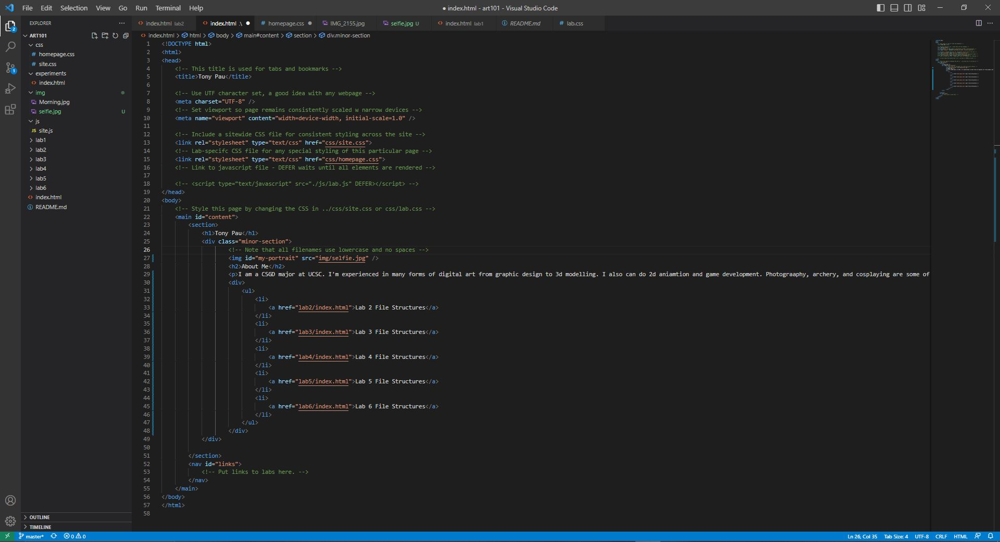
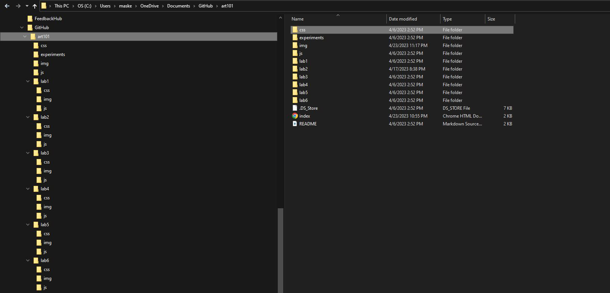

Lab 3: File Structure and File Transfer
Challenge
The idea of this lab was to further create a local file structure on my computer to have better organized files.
Problems
I didn't run into any issues for this lab as it was very straight forward. I did kinda had a 5 minute hold up as when I opened to my browser, the webpage showed the image as way too big even though I checked the css code. I later realized it was cause my Google Chrome was zoomed in like 150% so everything was good after I reset zoom back to 100%, haha.
Reflection
This lab definitely helped a lot as it had us add lists for each lab on our homepage which makes checking each lab easy as a click. I would like to say, even though the lab was short and simple, I made sure to put in full effort as this was honestly very interesting to do.
Results
The following images are the index.html homepage screenshot and the local file structure screenshot. My file structure on windows has everything organized into folders.
 